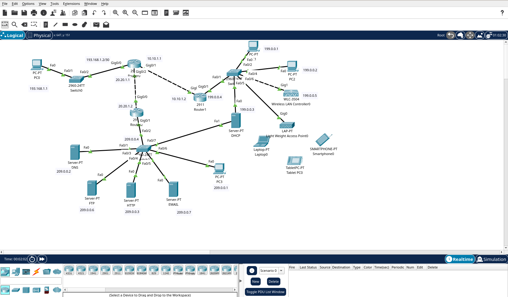

Smart Trash — Poubelle connectée IoT
Projet de fin de BTS réalisé en équipe sous la supervision de M. Ahmed Bachir Diedhiou. Une poubelle intelligente qui surveille en temps réel son taux de remplissage, son poids et la température ambiante. Les données remontent via WiFi + MQTT vers une Raspberry Pi qui les stocke dans MariaDB (conteneurisé Docker).
Mes contributions personnelles
Stack technique
Configuration réseau d'entreprise
Simulation et déploiement d'une infrastructure réseau complète sous Cisco Packet Tracer. Mise en place du routage inter-VLAN, switching L2/L3, et configuration des services réseau essentiels : DHCP, DNS et serveur Web.

Ce que j'ai mis en place
Site vitrine HTML / CSS
Mon premier projet web — un site vitrine statique réalisé en HTML5 et CSS3 pur. Mise en pratique de la sémantique HTML, du positionnement CSS et du design responsive sans framework.